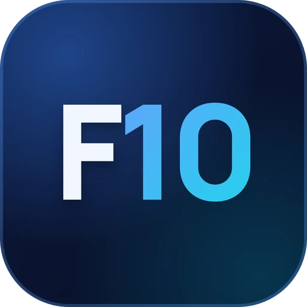

Cross-platform apps
An app for your business, association or event, on Android, the web and Windows from a single codebase (Flutter). It also installs on iPhone as a web app, and comes with a panel so you can publish yourself.
From €1,200
Fast, secure and easy to use. I take care of everything, from the design to the server setup.
Five projects already liveYours could be next.
Available for new projects
These days anyone can sell you an AI-made app in a few days. It may look fine, but what decides whether it still works a year from now is behind it.

I started out writing code by hand. Today AI is one more tool, and a very good one, but it doesn't replace knowing what's underneath.
Cross-platform app development, websites and servers for businesses, associations and individuals, in Córdoba and remotely. A fixed, written quote with no surprises.
An app for your business, association or event, on Android, the web and Windows from a single codebase (Flutter). It also installs on iPhone as a web app, and comes with a panel so you can publish yourself.
From €1,200
Fast, mobile-friendly websites, in one or more languages and ready for Google. From a one-page site to a full WordPress you manage yourself.
From €150 for a simple site of up to 5 pages
Your own server (VPS) with Docker and Cloudflare, with no open ports, encrypted backups, and your domain and email properly set up.
From €50 to set it up and secure it. Server rental is separate, from about €9 a month.
I move your website or blog (WordPress, Blogger…) to your own hosting without losing posts, photos or search rankings.
From €100
I review and protect what you already have with updates, security headers, backups that can actually be restored, and alerts if something goes down.
Free quote, based on what you need
Computers, networks and incidents, on-site in Córdoba or remotely. Installation, repair, tune-ups and advice.
Free quote, based on what you need
Prices are a guide. Every project gets a fixed quote in writing, with what's included and the timeline, and no strings attached.
Real projects: for clients, at work and on my own. Most of them are live, so you can open them.

2026 pilgrimage · mobile & web
The official app for the 2026 pilgrimage to Guadalupe: countdown, the day-by-day programme, what to bring and where to sleep, the catechesis, and each day's songs and prayers (with a guided rosary), on mobile and on the web, and offline. FastAPI backend with an admin panel and PostgreSQL.

Custom WordPress website
The website of a cultural association in Córdoba with a custom-made WordPress theme (dark mode, board, recipes and photo album), on hardened Docker with encrypted daily backups. In progress: migrating its 261-post Blogger blog.
International app · Spanish & English
The app of the World Organisation of Cursillos in Christianity (OMCC): installable on mobile, in Spanish and English, with a panel so the movement can publish on its own. Includes setting up and securing its server.

Projects at CleverByte
The sign-up and free-trial forms for CleverFactu's new website, the Dolibarr ERP on Docker with PostgreSQL, with a tool to switch its modules on and off, and WordPress server migrations.

Personal intelligence app
A personal intelligence layer for your phone: it connects the sources of someone's digital life, understands what happens in them and tells them what deserves their attention. Flutter app for Android and web, its own control panel and a Discord bot, with automatic deployment to my VPS and rollback if anything fails.

Modded Minecraft server
A private Minecraft 1.21 server with 44 mods: public website with live status, admin panel with push notifications, a custom C# launcher and recipe changes via datapacks, so nobody has to update anything.
This website and its server
Pure HTML, CSS and JavaScript, in two languages with light and dark mode. Served by a rootless, read-only nginx behind a Cloudflare Tunnel: zero open ports and a strict Content Security Policy.

My own remote desktop
My replacement for AnyDesk and TeamViewer: my own private WireGuard network, remote desktop for everyday use and low-latency streaming for gaming and video, with a Flutter app that installs everything.
Windows desktop app
It organises my school year: assignments, timetable, grades and calendar. It imports the Moodle calendar and checks what has been submitted, ships with its own installer and updates, and has a floating widget showing the current class.



It's an app written once that runs on Android, on the web and on Windows. I build it with Flutter, by Google. That keeps the cost down and gives you the same app on every device.
Yes. It installs from Safari as a web app and sits on the home screen like any other. If it also needs to be on the App Store, we'll cover it in the quote.
It depends on what you need. A simple website starts at €150, setting up your server at €50 and an app at €1,200. I'll send you a fixed quote in writing, with the timeline. The first conversation is free.
No. In Córdoba I can come in person, and remotely I work for anywhere in Spain or abroad, in Spanish or English.
Yes. I set up the server, configure your domain and email, and put backups in place. If you want, I can also handle the maintenance.
Tell me about it and I'll prepare a no-obligation quote.
I'm Federico Lora, a Higher Technician in Network Systems Administration (ASIR), and I work as a full-stack developer at CleverByte Consulting in Córdoba. In the afternoons I'm finishing my Higher Degree in Multiplatform Application Development (DAM).
I do two things that fit together. On one side, cross-platform app development, mostly with Flutter, for Android, web and Windows from a single codebase. On the other, setting up the servers they run on, with Linux, Docker, PostgreSQL and Cloudflare, no open ports and backups in place.
Since February 2026 I've taken my own and client projects to production, such as the Guadalupe app for the 2026 pilgrimage, the app for the World Organism of Cursillos in Christianity, the website of the Génesis Socio-Cultural Association and Faiten, my biggest personal project.
I come from the systems world. I've worked with servers, networks, hardware and cybersecurity at Hospital Cruz Roja, at Magtel and on an Erasmus+ placement in Lithuania, and it shows in how I work, documented, tested and secure from day one.
The phrase that defines me best is “Excellence is not an act, but a habit”.
Mornings, full-stack developer at CleverByte. Afternoons, my own projects and my clients'.
Higher Degree in Multiplatform Application Development
CES Lope de Vega, Córdoba
2025 – 2027Higher Degree in Network Computer Systems Administration
CES Lope de Vega, Córdoba
2023 – 2025Intermediate Degree in Microcomputer Systems and Networks
CES Lope de Vega, Córdoba
2021 – 2023Secondary Education
Colegio Bética Mudarra, Córdoba
2016 – 2021Skill 39 in IT Network Systems Administration, Jaén
First Lego League 2017
First Lego League 2017
4 years of studies at Bwit
2 years of programming at Bwit
Erasmus+ in Vilnius, Lithuania (2022)
Microsoft Azure cloud fundamentals
BPM process modelling


Full-stack developer · Cross-platform apps
Have you got an app, a website or a server in mind?
Tell me what you need and when, and I'll send you a fixed quote with no strings attached.
And if you're looking for someone to join your team, let's talk too.
Full PDF version